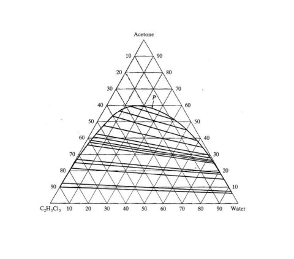
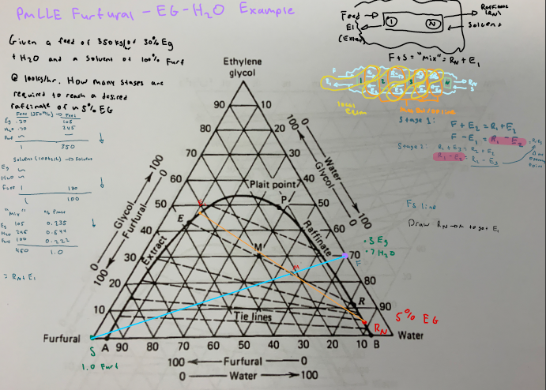

Liquid-Liquid Extraction Examples
Blank LLE Diagram

Partially Miscible Liquid Liquid Extraction
Problem Statement: Given a feed of 350kg/hr of 30% EG + H2O
and a solvent of 100% Furfural at 100kg/hr how many stages are
required to reach a desired raffinate of ~5% EG
